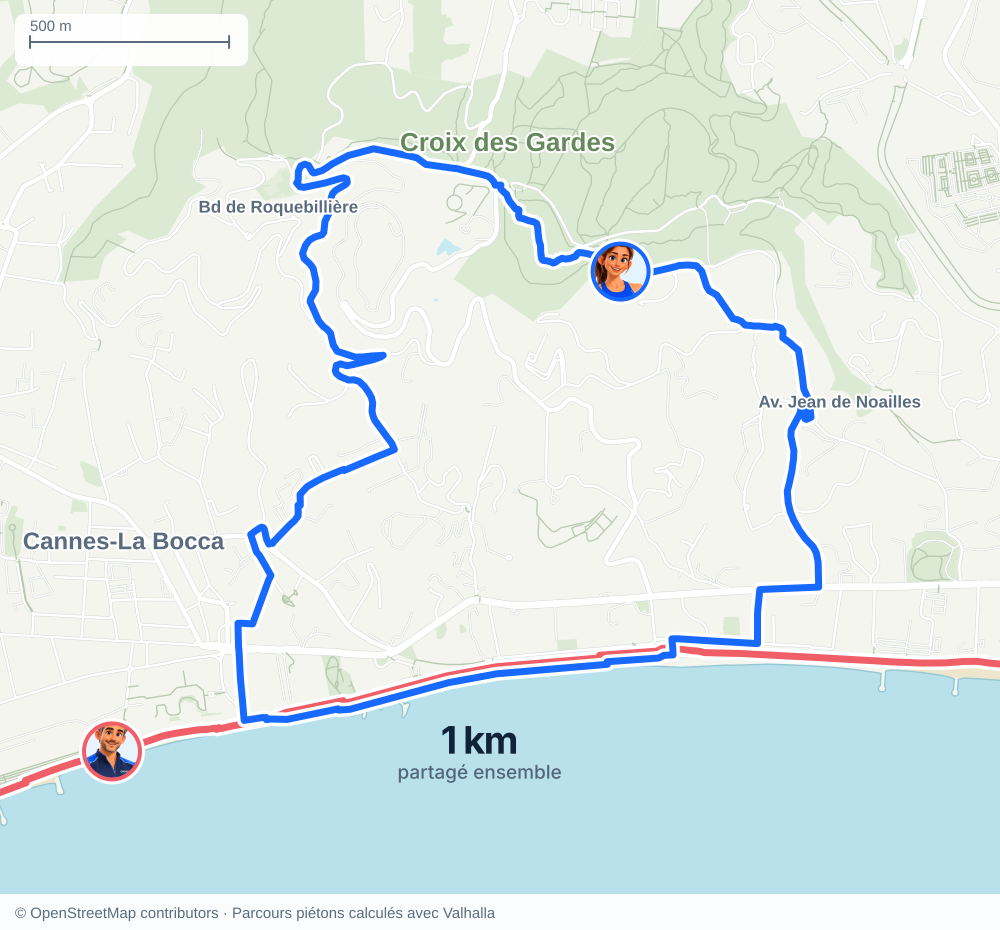
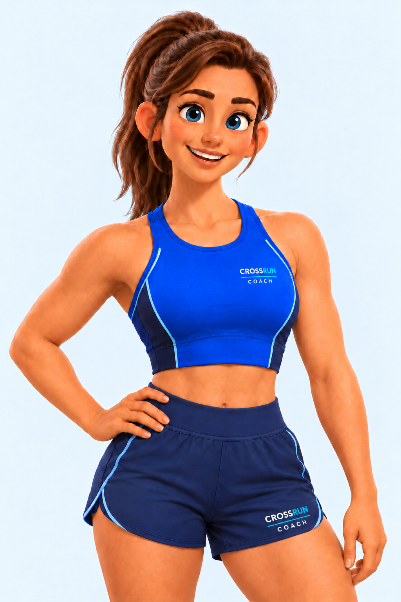

Choisis ton parcours
Trouve une boucle, crée ton tracé ou importe un GPX depuis le même accès Parcours.
CrossRun t’aide à préparer une sortie, à la suivre et à retrouver les kilomètres partagés avec d’autres coureurs. Tu restes libre d’échanger ou non.
AVANT, PENDANT, APRÈS
Trois étapes simples, sans changer ta façon de courir.
Trouve une boucle, crée ton tracé ou importe un GPX depuis le même accès Parcours.
Enregistre ta course GPS ou ouvre Guidage GPS pour suivre un itinéraire déjà enregistré.
Après la course, CrossRun compare les parcours compatibles et te montre les coureurs croisés.
APRÈS TA COURSE
Si deux sorties se sont déroulées sur la même portion au même moment, CrossRun peut faire apparaître le croisement. Tu peux envoyer un Wave. La conversation s’ouvre seulement si l’autre personne accepte aussi.

PARCOURS & GUIDAGE GPS
Les trois options se trouvent dans la même entrée Parcours.
TES OBJECTIFS, À TON RYTHME
Choisis une distance, ton niveau et les jours où tu peux courir. Le coach t’aide à organiser tes séances et à suivre ta progression.
Découvrir les coachs et objectifs


LES DÉFIS DE GROUPE
Les kilomètres de chacun s’ajoutent à un objectif commun. Tu peux suivre la progression et échanger avec les membres du groupe.
Voir un exemple de défi
Les échanges sont facultatifs. Tu choisis ce que tu partages et avec qui. La localisation temporaire de sécurité pendant une course est un réglage séparé.
Comprendre la confidentialitéLes tests sont ouverts sur iPhone et Android, à Cannes et dans les environs.
Bêta gratuite · 18 ans et plus